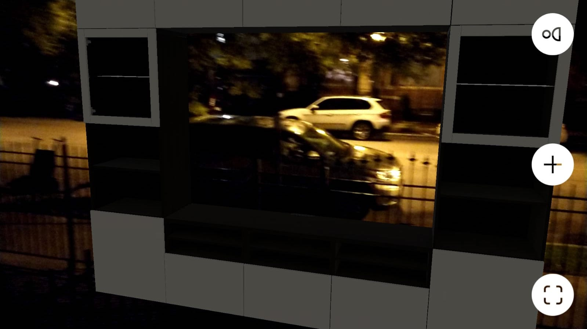

IKEA Place

IKEA had an interesting and interesting solution to this problem. With IKEA Place, people could visually see how different furniture could fit into different rooms of their house. Instead of imagining how a piece of furniture would look, they created an augmented reality application with which you can literally place furniture from IKEA in your house to see how it’ll look. This removes a huge amount of confusion when people want to pick up furniture. It also addresses another problem of spending a huge amount of time wading through an IKEA store trying to find the perfectly matching furniture for your room. Previously, IKEA shoppers would spend hours in an IKEA store going through thousands of options for a piece of furniture that in the end may not look as good in your living room as it did in the IKEA store. With the help of the augmented reality application IKEA Place, people can figure out the best furniture for their house before even going to the store. Once they reach the store, it’s just a matter of picking up the right selected item. This way a lot of time is saved and people will know how the furniture looks in their house.
One of the most interesting things about this application is not only the fact that any furniture can be placed in your surroundings but the fact that the application can recognize the ground plane of any surface. When an item is selected, the application first detects where the ground is in your surroundings. Subsequently, it places the object on the ground plane. This gives it a more realistic feel especially since the piece of furniture is not just hanging in space. The models are also to scale so it is possible to place realistic looking furniture in your surroundings. The application also has a novel way of scaling the furniture according to room dimensions. The AR application is accurate with the scaling 98% of the time. The AR technology is so advanced that it is possible to see the texture of the fabric as well as how light and shadows affect the furniture.
The application paves the way for revolutionizing the retail industry. While most of the talk about Augmented Reality and Virtual Reality lie in the gaming sector, IKEA Place has proved that there is a place for augmented reality in the business field as well. While IKEA has started the trend of integrating business with augmented reality, there are plenty of applications where augmented reality can come in handy. One of the applications that comes to mind is the use of beauty products. I have spent hours shopping with my friends while they try to decide what cosmetic products would fit their skin tones or facial structure. For example, there are thousands of shades of lipstick. It is impossible for someone to test all the lipsticks to see which one would suit them the best. Here, AR applications can come in handy. By using an application, the augmented reality can detect where the person’s lips are and augment the correct color so that they can see how they look with a particular shade.
In terms of the actual IKEA Place application, I believe there are more hurdles that can be handled with augmented reality. There could be some interesting developments in the application. For example, when I placed a mirror in my room, the object just showed a box without showing any properties of a mirror. With the advancement of technology, these additional hurdles can be addressed. IKEA also sells lampshades and lamps. If the application could actually show how a lampshade or lamp could affect the room lighting, it would be impressive.